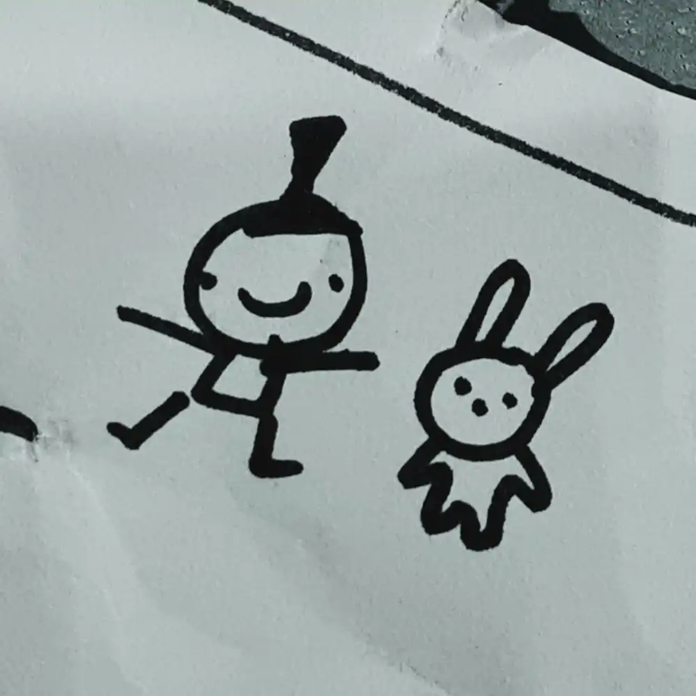

720 Degrees
| Published On | September 13, 2023 |
|---|
A song venting about
Lyrics
Well remember that time when it was just the two of us
Awake in the middle of the night and everyone else was asleep
You held my hand and I held yours
And we both smiled to each other
But clearly you had something else on your mind
Because I was 7 years old
‘Cuz I was so naïve
To even think that I could trust you with my own body
And I know you never got caught but did you know that hell is kinda scary
I hate you so much ‘cuz you just ruined my life like that
And I know you always deny it because you’re a douchebag
Remember when you lied in court and lied to us about mom
And I just know you’d never take the blame because you’re a fucking asshole and no one likes you and you’re going to hell
‘Cuz every single gift you bought us was really just a makeshift Band-Aid
To hide the fact that you were never really a father
Maybe my memory is shit because you never fed us quite as well as yourself
But at least I remember all the things you did to me
You know there was this one room in the old house we lived in
That you’d lock us inside of because we were never good enough for you
It kinda reminds me of the time in hospital because they had to make sure I didn’t fuckin’ neck myself
Well at least the food was pretty good, I ate like 8 sandwiches
Never picked me up from school when I tried to kill myself on recess
Teachers don’t believe you when they think you’re just a troubled boy
Even sister blames you for our brother’s death
Because you never were quite good to him at all
And clearly you didn’t learn a thing from him doing a backflip off a building, fuckin’ 720 degrees that shit
‘Cuz the only thing you cared about that month was getting baptised since you’ll knew you’d go to hell
Right with your own dad who fucked a chicken, what?
And then there’s mom, who you hit who you blame for your own falls
Look at her now she’s a fragile porcelain doll
Without a goal because you’re a controlling, abusive, narcissistic, sack of shit bastard who really just deserves to rot in hell
Kneel and pray go to church read the bible all you want
If you’re lucky even God might actually forgive you
Otherwise I’ll see you in hell for writing this song, bitch
And they always tell me that
We’re all family and we should try and get along right
Because we’re all connected by blood
But I guess it’s too bad because past a certain age
Your kids will learn enough to figure out what’s really going on
And that’s when you’ll be in trouble
Wonder when you’re old if any of your kids will talk to you again
Consider the possibility that you’re the one who’s a fucking stain
Of shit to all our lives do us all a favour and just fucking kill yourself
Stick a shotgun up your mouth and pull the trigger
Cos when you’re old and no one cares for you no more
It’ll be way too late to fix it all
But that is if you’re assuming it’s not too late already to fix it now… that’s funny
When you die and hopefully youlll die soon you'll be all alone
And I wouldn’t even want to pay for your headstone
But if you had one, for some reason? I'll draw a fucking dick on it because that's what you were to us our whole lives, you were just a dick I hope you suck Satan’s cock in hell